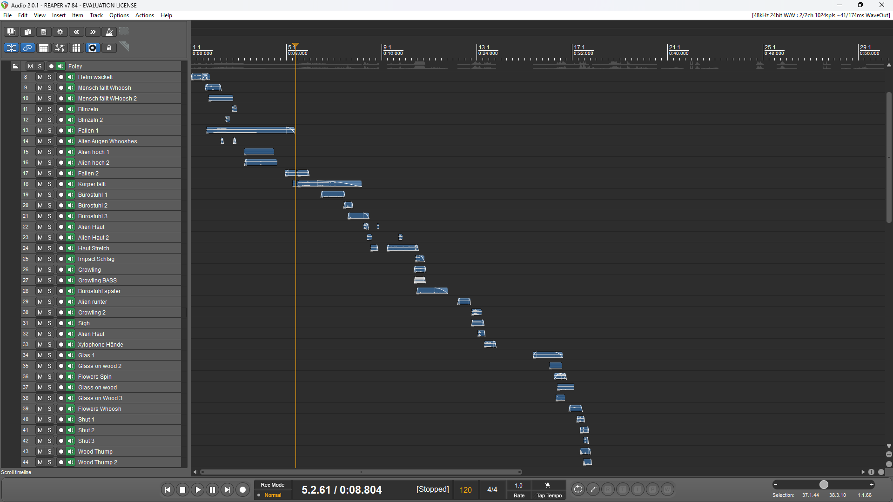
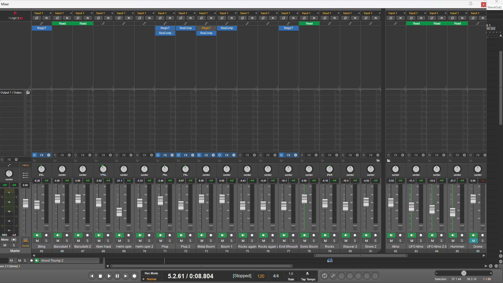
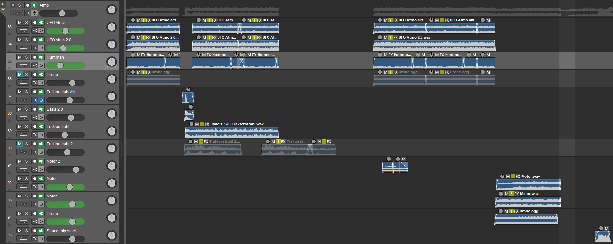

SOUNDDESIGN & VERTONUNG
Lifted
Vollständige Neuvertonung eines animierten Kurzfilms
In diesem Projekt habe ich den animierten Kurzfilm „Lifted“ vollständig neu vertont. Sämtliche Geräusche, atmosphärischen Elemente und Sprache wurden neu gestaltet, bearbeitet und mit dem Bild synchronisiert.
Der fertige Film
Vollständige Neuvertonung des Kurzfilms „Lifted“
Meine Arbeit
Die ursprüngliche Tonspur des Films wurde durch eine vollständig eigene Audiogestaltung ersetzt. Dafür habe ich passende Geräusche aus Soundlibraries ausgewählt, bearbeitet und präzise mit den Bildereignissen synchronisiert.
Neben der Gestaltung einzelner Geräusche lag ein besonderer Fokus auf räumlicher Wirkung, Dynamik und einer stimmigen Gesamtatmosphäre.
Umgesetzte Arbeitsschritte
- Auswahl und Bearbeitung von Sounds aus Soundlibraries
- Aufnahme und Bearbeitung eigener Sprache
- Synchronisation von Geräuschen mit Bildereignissen
- Gestaltung räumlicher Bewegungen durch Panorama- und Lautstärkeautomation
- Aufbau einer strukturierten Audiosession mit separaten Spuren und Effekt-Bussen
- Mixing und klangliche Anpassung mit verschiedenen Audioeffekten
Ein Blick in die Produktion
Die Audiobearbeitung und das Mixing wurden vollständig in REAPER umgesetzt.

Projektorganisation
Übersicht der Audiosession mit den einzelnen Tonspuren und der strukturierten Anordnung der verschiedenen Soundelemente.

Mixing & Effekt-Busse
Die verschiedenen Soundelemente wurden über separate Spuren und Effekt-Busse bearbeitet und klanglich aufeinander abgestimmt.

Fades & Automation
Durch Fades, Crossfades und Automation von Lautstärke und Panorama wurden Übergänge gestaltet und räumliche Bewegungen umgesetzt.
Verwendete Software
REAPER